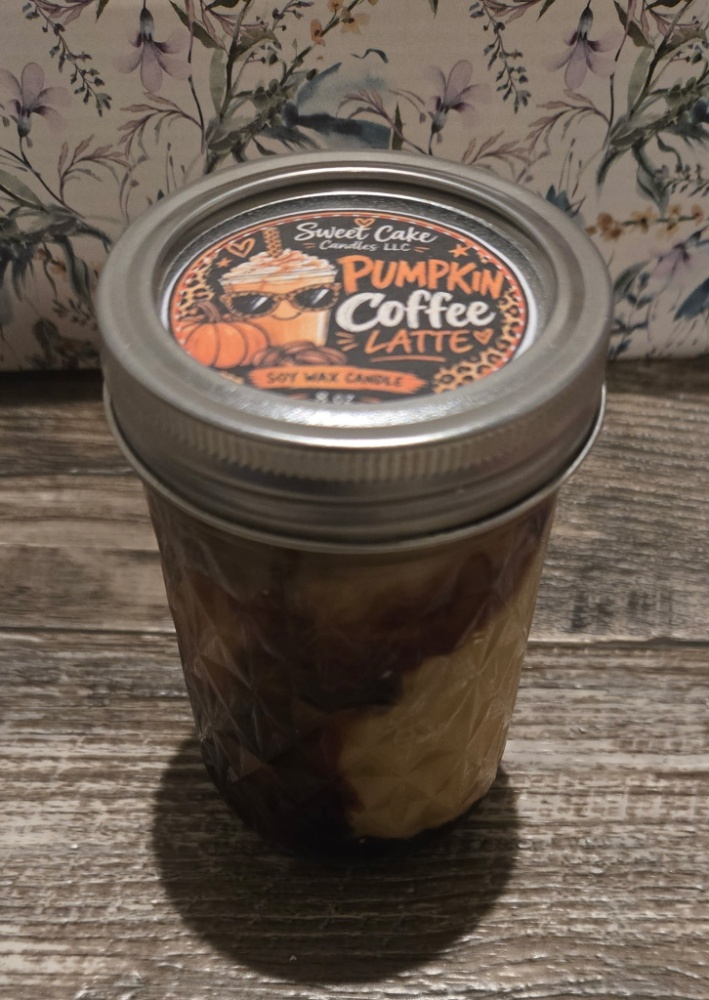
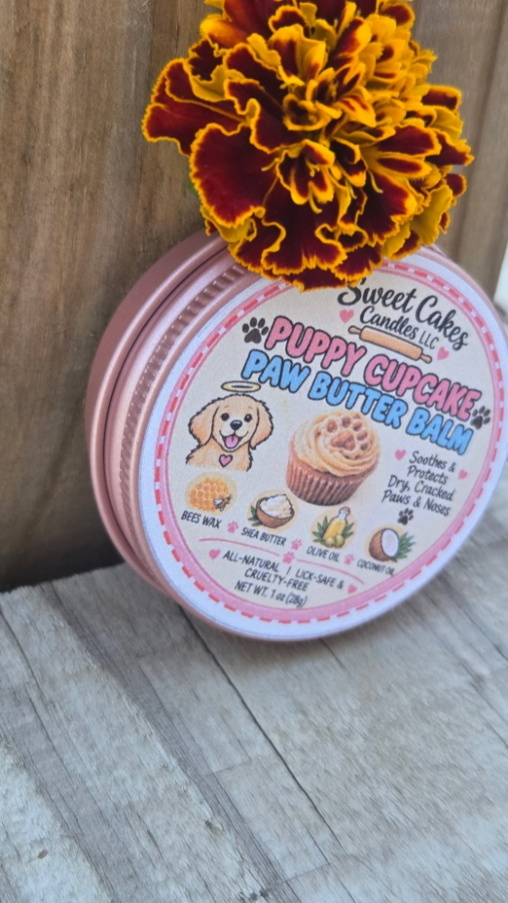
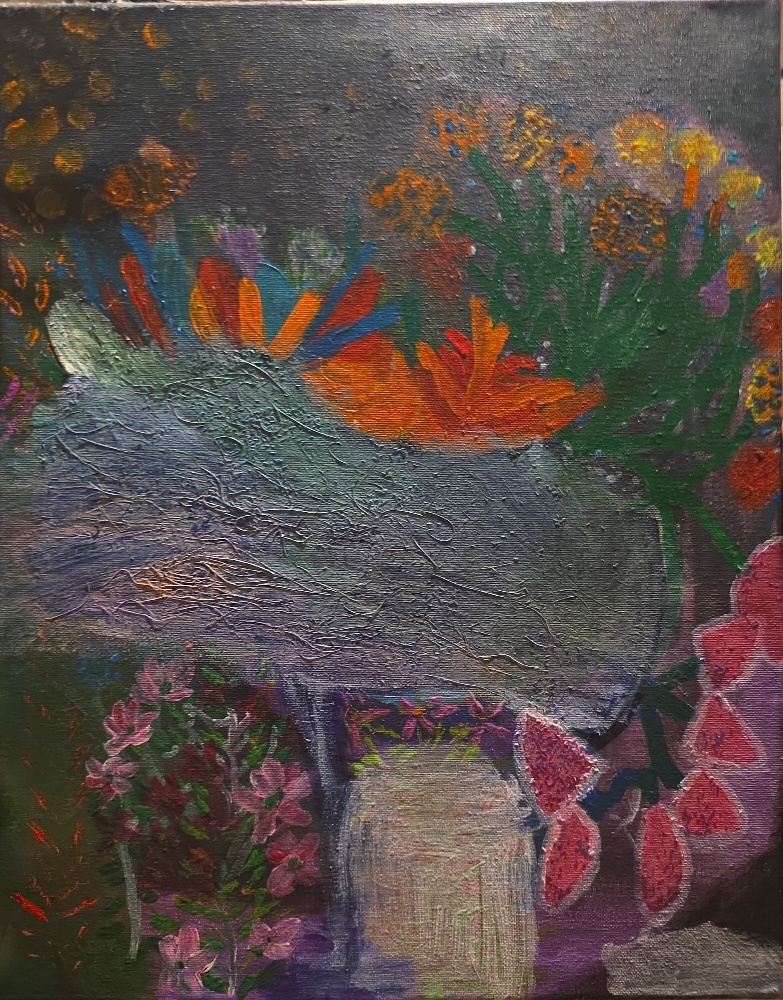

Hobbies & Creative Passions
Exploring artisan candle crafting, natural pet balms, and fine art painting.

Artisan Candle Making
Through her business, Sweet Cakes Candles LLC, Laura formulates and pours custom scented soy wax candles like Pumpkin Coffee Latte, Apple Cinnamon, and Grandma's Snickerdoodle. She designs all custom packaging and marketing materials.

Natural Pet Care Crafting
Expanding her product line, Laura formulates all-natural, cruelty-free, and lick-safe products such as Puppy Cupcake Paw Butter Balm, crafted with beeswax, shea butter, olive oil, and coconut oil to protect dry paws and noses.

Painting & Fine Arts
Outside of her professional career and graduate studies, Laura unwinds through expressive portrait painting and textured floral mixed-media canvas artwork.